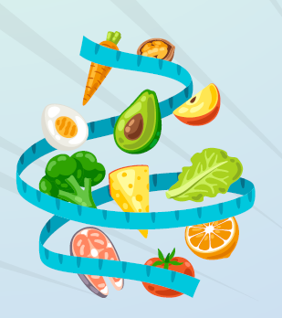
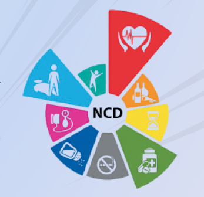

NutriNCD QUEST
30th AP State Joint IAPSM & IPHA Conference
Andhra Medical College, Visakhapatnam.
Andhra Medical College, Visakhapatnam.
Rules:
- 20 Questions | No Negative Marks
- Tie-Breaker: Fastest Time
- Top 6 Qualify for the Finals & Quiz Master's decision shall be final and binding